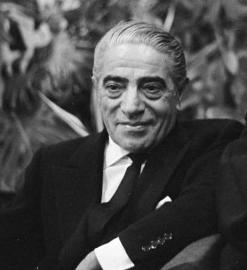

Aristole onassis
1906-1975
One of the Richest people in 20th century
Aristotle Socrates Onassis (Greek: Αριστοτέλης Ωνάσης,
Aristotelis Onasis;
20 January 1906 – 15 March 1975),[1] commonly called Ari or Aristo Onassis,
was a Greek-Argentine shipping magnate, who amassed the world's largest
privately owned shipping
fleet and was one of the world's richest and most famous men

The most well known portrait of onassis.